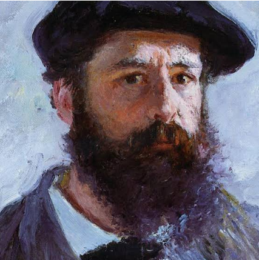
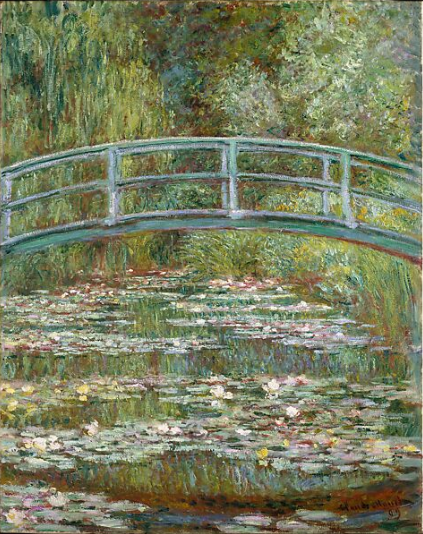
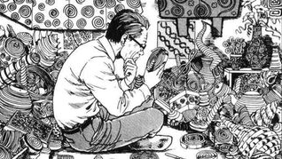
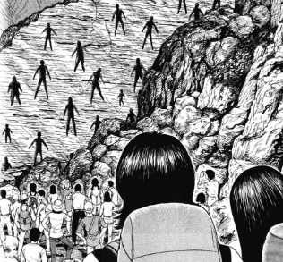

The Inspirations
Claude Monet
Claude Monet wasa French artist, known as one of the founders of French impressionist art. Known for painting images of controlled nature as well as spearheading an art style revolving around a focus in texture. Some of his most famous pieces are
Impression,Sunrise
,
The Water Lily Pond
, and
Woman with a Parasol- Madame Monet and Her Son
.   You can learn more about Claude Monet
here!
Junji Ito
Junji Ito is a Mangaka from Japan known for his unique and popular horror stories. They have a focus on body horror, cosmic horror,and the grotesque. His most popular works are
Uzumaki
, as well as
Tomie
.Although he has published many more.   You can learn more about Junji Ito
here!
Claude Monet
Impressionist Style
Painter
Fast Brush Strokes
Mostly Relating to Nature
Focus on Texture
Vibrant Colors
Junji ito
Horror Manga
Explores Cosmic Horror
Macabre Art
Ink
Focus on Texture